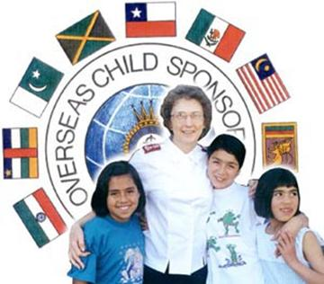

| The Salvation Army is an international organization serving in more than 100 countries. As part of our commitment and careful stewardship of God’s abundant resources to us, opportunities are given to our members to participate in giving to missions year-round. |
| The local congregation support of Salvation Army personnel serving outside of Canada is by means of on-going e-mail correspondence, birthday and Christmas cards, e-mail messages at Easter and Thanksgiving, making the congregation aware of specific needs and prayer requests and giving monetary gifts for each adult and child at Christmas. |
|
The encouragement of personnel is very apparent from the letters received in appreciation of knowing someone is thinking of them when they are dealing with difficult situations.
The Salvation Army internationally also has an overseas mission appeal called ‘Partners in Mission’ which we encourage people to support year-round. Contributions to this appeal are used to support personnel, and programs including Salvation Army hospitals, employment opportunity and education. A further opportunity is available to support missions by Child Sponsorship through The Salvation Army. To learn more about this, please click here. |
|

|
|
25 Centre Ave North York, ON M1H 2C3 |
Phone: 416-225-7968 e-mail: corps@northyorktemple.ca |